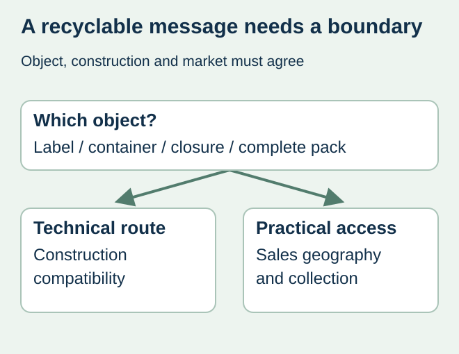
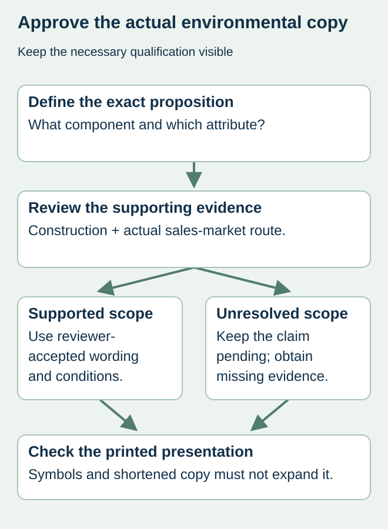

A bottle supplier describes a plastic material as recyclable. The label designer turns that into a large “100% recyclable” statement on the finished food pack. Between those two statements sit other components, collection access and a claim whose scope may be unclear.
Define what the message describes and where the product is sold before approving the wording. Separate technical recycling compatibility from local collection and processing access. A material name, resin code or leaf illustration cannot settle all three questions.


Use market-specific claim review
The US Federal Trade Commission’s Green Guides recyclable-claims provision addresses qualifications for recyclable claims and distinguishes environmental attributes. Its guidance considers availability of recycling facilities to consumers or communities where a product is sold. Have the responsible claim reviewer apply current requirements to the actual wording and sales area; do not export one market’s conclusion to every label version.
Recycled content, recyclability and compostability describe different propositions. A component made with recovered material is not automatically accepted in the consumer’s recycling route. Conversely, a claim about a container should not visually imply the food itself or every packaging component has that attribute.
Build a claim boundary sheet
| Claim input | Identify explicitly | Missing evidence to flag |
|---|---|---|
| Object | Label, bottle, closure or complete pack | Wording or icon implies a broader object |
| Construction | All relevant components and material references | Only the bare container was assessed |
| Market | Actual sales geography and channels | Evidence comes from another region |
| Practical route | Applicable collection and processing information | Material identity is the only support |
| Wording | Exact text, symbol and required qualification | A designer shortened away the condition |
Ask the packaging specialist how label material, adhesive, ink, coverage and other components affect the proposed route. Keep that technical assessment identified. Collection evidence then addresses a different question: can the people buying the actual product use an appropriate route under the relevant conditions?


Make qualifications survive the design process
If the accepted message needs a limitation, keep it in the approved artwork rather than reducing it to an unreadable footnote or removing it from a front sticker. Ask the claim reviewer to assess the actual presentation, including any image or symbol that changes the likely meaning. This article supplies no universal recycling icon or disposal instruction.
For a fictional beverage sold in two regions, the packaging construction could remain unchanged while collection arrangements differ. That difference may require separate reviewed wording or another approved approach. The label schedule should distinguish the market versions so the co-packer does not treat the graphics as interchangeable.
Revisit claims when construction or distribution changes
A new label finish, larger coverage area or substituted component should return to the appropriate technical reviewer. A new distribution market should return to the claim reviewer. Record which previous evidence remains applicable and which conclusion is open. An unchanged marketing slogan is not an assessment of the changed pack.
The PET recycling guide addresses a material-compatibility question, while the compostability guide addresses a separate claim and certification scope. Keep those evidence chains distinct. Printing can reproduce an accepted environmental message; it does not establish that the message is substantiated.
Discuss the unresolved label requirement
Share the actual package construction, exact proposed recycling statement, target sales markets and responsible reviewer’s evidence or open questions. Identify whether the claim concerns the label, container or complete pack. Prepare a label specification inquiry. The contact page opens an email draft and lists email or WhatsApp for attachments. Supply, proof options, testing, pricing and timing require project confirmation.